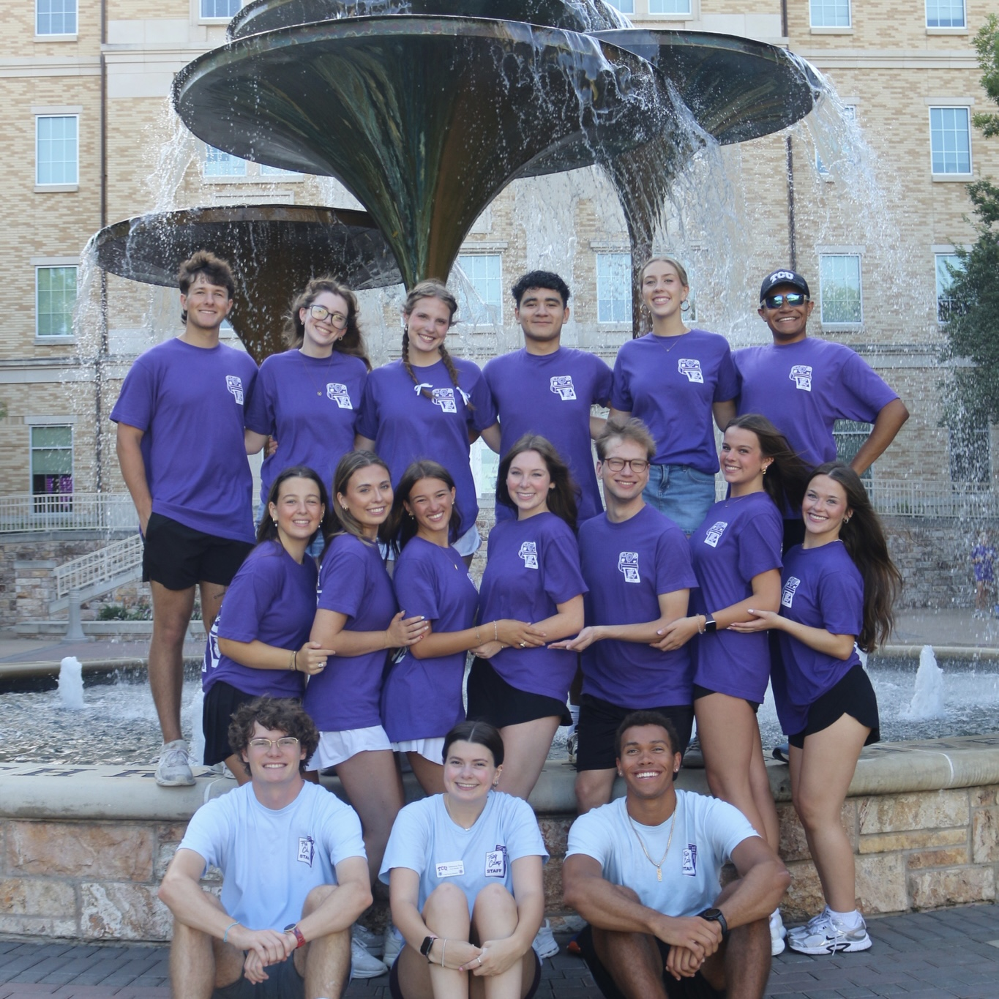

A Short Overview About Myself
I am the first generation in my family to attend college. I have lived in Texas my whole life and what attracted me to TCU is the fact it was always my dream school growing up. What attracted me to TCU was the fact it was a place where I viewed myself growing in both academics and social growth through new friendships and executive positions in clubs.
What I Want to Learn
My goals for this course include growing in my knowledge of different coding languages and attempt to understand JavaScript somewhat fluently. I also hope to gain better confidence in navigating VS Code and Github pages due to my current knowledge being rather simple in understanding how to pull/push origins.
Extracurriculars
Aside from academics, I am actively involved in extracurriculars on campus. Among these extracurriculars are Talking Frogs (a public speaking club), TCU Esports, TCU Twisters (a country line dance group), TCU Newman Center, SACNAS, and the Italian Club. In the summer time, I love giving back to TCU by volunteering for Frog Camp and welcoming the incoming Frehsmen. I also enjoy gofling whenever I have the time to go to the range or squeeze a few rounds in. I am also a big video gamer with my video game outlet of choice being Xbox. Through Xbox and Discord, I regularly keep up with my virtual friend group known as Civil Inc.

More on Golf
Before arriving to TCU in Fall 2024, I was a very active junior golfer throughout middle and high school. I competed on the North Texas Junior PGA, South Texas Junior PGA, Texas Junior Golf Tour, and Hurricane Junior Golf Tour circuits. By playing this life changing sport, I developed my love for traveling due to the tournaments taking me all throughout the great state of Texas and the larger United States.
More on Traveling
There is something about traveling that excites me. I am an avid fan of the Disney and Universal theme parks and always visit them given the chance. Up until this year, Disney World in Florida was my favorite Disney Park. But once I visited Tokyo Disneyland and DisneySea with a study abroad through TCU in Japan, I rank them barely over Disney World. Additionally, the study abroad to Japan gave me the opportunity to finally travel beyond the United States and experience completely different cultures and traditions.